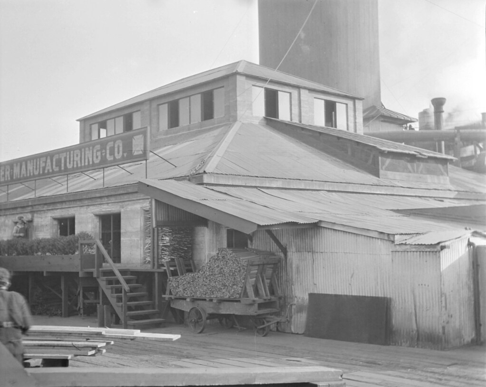
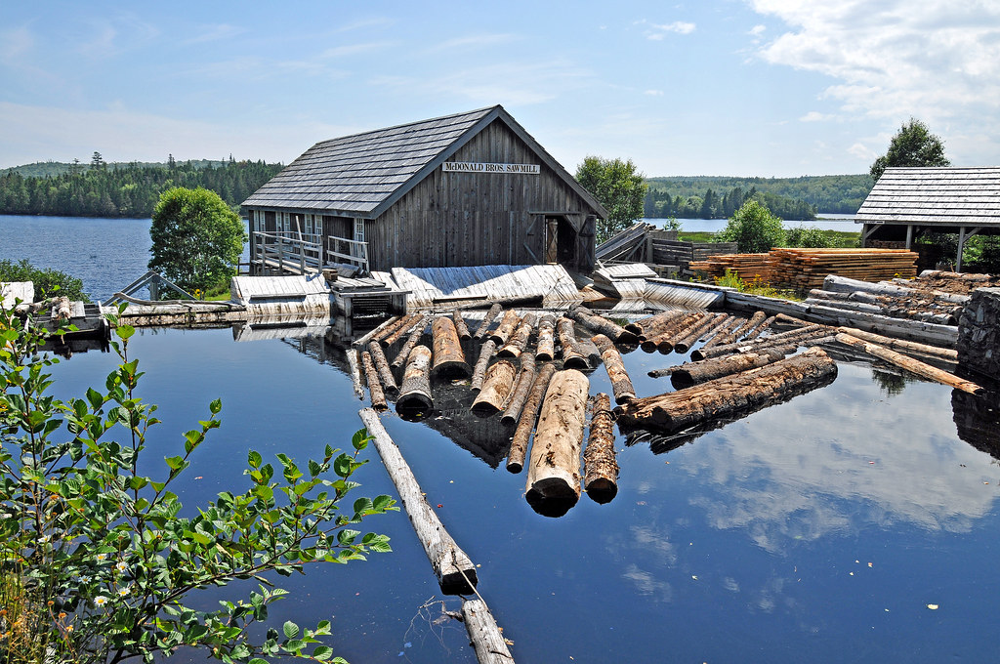

After the U. S. Civil War veteran John Major settled with his wife, Julia and daughter, Anna in Northern Michigan. He planted some black locust trees and an apple orchard around the cabin. Most of the forest in this area was hardwood, but there were some stands of white pine inland from Pine Lake. By the late 1850s, lumber speculators were on their way north as the forests near Grand Haven and Muskegon were harvested.
Towns History

Dr. Arthur O’Leary, recognized the financial potential of the timber stands around Pine Creek. A sawmill was built on the south side of Pine Creek not far from Lake Michigan. Mill operation began in 1869 for the purpose of producing white pine lumber, and the town of Majorville was established.
